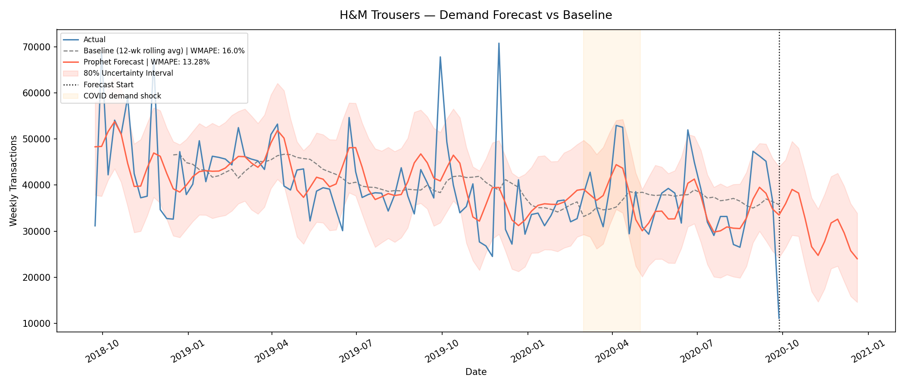

Portfolio Project — Fashion Tech
A demand forecasting model built on 31.7 million H&M transactions (2018–2020), testing whether Google Trends search volume acts as a leading indicator for fashion purchase behavior across four product categories.
Forecast Accuracy — Prophet vs Baseline
Prophet outperforms a 3-month rolling average in all four categories. Improvement scales with seasonal intensity — the more volatile the category, the more a naive baseline fails.
Model Performance by Category
Click any category to load its forecast, seasonality, and Google Trends charts in the explorer below.
Trousers
13.28%
Prophet WMAPE
VIEW IN EXPLORER →
T-Shirt
12.93%
Prophet WMAPE
VIEW IN EXPLORER →
Sweater
16.77%
Prophet WMAPE (tuned)
VIEW IN EXPLORER →
Swimwear
19.71%
Prophet WMAPE
VIEW IN EXPLORER →
Category Explorer
Select a category and chart type to explore the forecast, seasonal pattern, and Google Trends signal.

Key Findings
01
Prophet beats the baseline in every category
Facebook Prophet outperforms a 3-month rolling average across all four categories. Improvement scales directly with seasonal intensity where Swimwear improved 65% and Sweater 56%, while the more stable Trousers improved 17%. The more volatile the demand, the more value a proper forecasting model adds over a naive heuristic.
02
Google search predicts swimwear purchases 1 week early
US Google Trends search volume shows a statistically significant correlation with H&M swimwear transactions at a 1-week lag (r = 0.88, p < 0.001). A demand planner checking search trends today has a 1-week window to adjust inventory before the demand shift hits. This is a meaningful operational signal.
03
Not every category has a searchable signal
Trousers shows no statistically significant relationship between Google search volume and H&M purchases (r = 0.11, p = 0.27). As a wardrobe staple, trouser purchases are not preceded by online research. Search data is category-dependent and should supplement historical forecasting, not replace it.